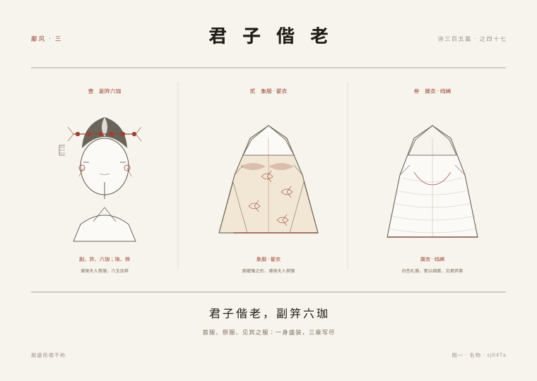
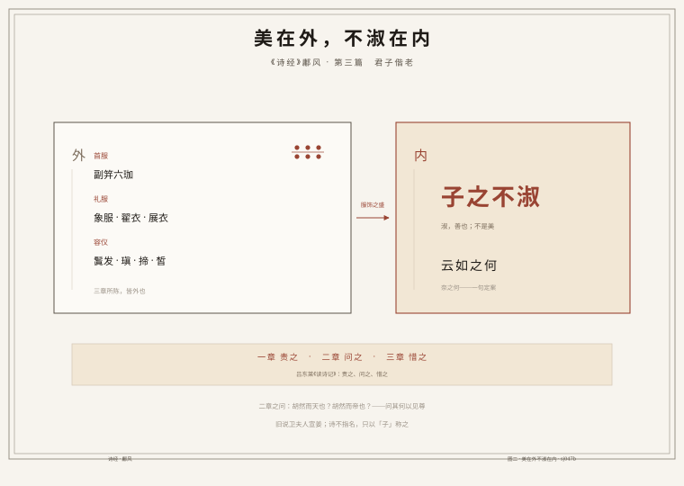

第四十七篇 君子偕老
鄘风 · 之三 SJ047
朗读 · 普通话
依经文正文朗读，句读从文；不配乐、不改速、不加拖腔。全库同一音色（豆包 TTS），非播音员录制。
一 解题
诗三判：
- 谁在说：一个看着卫夫人盛装行礼的国人。他不指名，只称「子」；把她的首服、礼服、容仪一件件写足，再压上一句「不淑」。
- 说什么事：她本当与君子同生同死，穿副笄六珈、象服翟衣、展衣，容貌如天如帝；可「子之不淑」，这一身盛装便照空了。
- 为何编在此：鄘风第三篇。前两篇一守一讳，此篇一美；守、讳、刺，三篇各开一面。写卫宫，从《柏舟》的守，到《墙有茨》的讳，再到此篇的刺。
《毛序》：「《君子偕老》，刺卫夫人也。夫人淫乱，失事君子之道，故陈人君之德，服饰之盛，宜与君子偕老也。」
按：「人君」即「小君」，指夫人，不是国君；旧注以「人」为「小」之误。读者不可把「人君之德」坐成国君之德。
朱子《诗集传》：「君子，夫也。偕老，言偕生而偕死也。」又谓：「今宣姜之不善乃如此，虽有是服，亦将如之何？」
本库的看法：诗文本不给你名字，只给「子」。
它把最美的衣服一件一件穿给她，再把「不淑」两个字压上去；二、三章继续夸，夸到「如天如帝」、夸到「邦之媛」，却始终不收回那一句。美愈盛，刺愈深。旧说宣姜，存而不坐实。
二 经文
第一章
君子偕老，副笄六珈。委委佗佗，如山如河，象服是宜。子之不淑，云如之何？
第二章
玼兮玼兮，其之翟也。鬒髮如雲，不屑髢也。玉之瑱也，象之揥也，揚且之皙也。胡然而天也？胡然而帝也？
第三章
瑳兮瑳兮，其之展也。蒙彼縐絺，是紲袢也。子之清揚，揚且之顏也。展如之人兮，邦之媛也！
分章：毛传、朱子皆三章，一章七句，二章九句，三章八句。一章立「偕老」之应然，二章写祭服与容仪，三章写见宾之服；末句一层层把「美」推到底。
三 韵读
| 一 |
珈、佗、河、宜、何 |
歌部 |
| 二 |
玼、翟、髢、揥、皙、帝 |
支部／锡部（阴入通押） |
| 三 |
展、袢、颜、媛 |
元部 |
一章「老」（幽部）、「淑」（觉部）不入主韵；二章「瑱、天」真部自叶；三章「瑳」（歌部）、「絺」（脂部）不入主韵。三章各有主韵：一章歌部舒长，二章支、锡短促，三章元部收得稳。
四 字义与名物
字义
- 君子——夫。朱子：「君子，夫也。」
- 偕老——同生同死，不只是「一起变老」。朱子：「偕老，言偕生而偕死也。」
- 副、笄、珈——副，后夫人首饰，编发为之；笄，衡笄；珈，笄上的玉饰，「珈之言加」。六珈，六件玉饰，所以别尊卑。
- 委委佗佗（wēi wēi tuó
tuó）——毛传：委委，行可委曲踪迹；佗佗，德平易。《尔雅》亦训「美」。
- 如山如河——毛传：山无不容，河无不润。喻德量厚重，不是写山水。
- 象服——画象为饰的礼服。郑笺指褕翟、阙翟；不是「象骨饰衣」的泛称。
- 子——你，指夫人。不是「儿子」。
- 不淑——不善。淑，善也；不是「不美」。
- 云如之何——奈之何，能拿你怎么办。
- 玼（cǐ）——鲜盛貌；玉色鲜明。
- 翟（dí）——翟衣，祭服；画翟雉之形为饰。
- 鬒（zhěn）——黑发浓密。如云，言美长。
- 髢（dí）——假发。不屑髢，不用假发。
- 瑱（tiàn）——塞耳玉，悬在耳旁。
- 揥（tì）——象牙做的发揥，所以摘发；一说搔头。
- 扬、皙——扬，眉上广；皙，白皙。
- 胡然——何故如此。天、帝，旧注「尊之如天，审谛如帝」；不是神话里的天帝。
- 瑳（cuō）——玉色鲜白；与「玼」对。
- 展——展衣，礼服名。毛传谓以丹縠为衣，郑笺谓后妃六服之次，宜白；此从郑说，存毛说。
- 绉絺（zhòu chī）——细葛布；絺之细密者为绉。
- 绁袢——当暑去热的里衣；展衣夏则里之以绉絺。
- 清扬——眉目清明；扬，额头宽广。
- 颜——额角丰满，兼指面容。
- 展如——展，诚也；诚然如此。
- 媛——美女。邦之媛，一国之美女；不是「贤媛」。
名物
- 副笄六珈——后夫人首服：编发作副，横插衡笄，笄上加六件玉饰；耳旁悬瑱，发旁插揥。
- 象服 / 翟衣 /
展衣——三套礼服：象服（褕翟、阙翟）画翟雉之形，用于祭祀；展衣用于见君与宾客。三章由祭服转到见宾之服，礼服一层层换，盛装一层层加。
- 绉絺 /
绁袢——展衣里的细葛里衣；暑日去热，贴身穿。不是外袍。
五 今译
第一章
与君子同生同死，头上戴副、插衡笄、加六件玉饰。行步委曲有度，德性平易，像山一样无所不容，像河一样无所不润；象服穿在她身上正合宜。可你这人却不善，能拿你怎么办？
第二章
鲜明啊鲜明，她的翟衣。黑发浓密如云，不用假发。玉做的塞耳，象牙做的发揥，眉上宽广而肤色白皙。为什么她像天一样被尊？为什么像帝一样被敬？
第三章
鲜白啊鲜白，她的展衣。罩着细葛，是暑天的里衣。你的眉目清秀，额头宽广，容颜丰满。诚然这样的人，是一国的美女。
译注：「副笄六珈」保留名物，不译作「六种首饰」；「委委佗佗」译行步与德性；「象服」保留；「不淑」译不善；「胡然」译为什么这样；「展如」译诚然；「媛」译美女，不译贤媛。
六 章旨
一章：先立应然，再翻案。
「君子偕老」是应然，「副笄六珈、象服是宜」是盛装；末一句「子之不淑」把前面全部照空。吕东莱所谓「责之」。
二章：由首服转到祭服、容仪，极写鲜盛。
末二句「胡然天、胡然帝」不是赞叹到底，是发问：这样一个人，凭什么被尊？吕东莱所谓「问之」。
三章：由祭服转到见宾之服，收在「邦之媛」。
不再责，也不再问，只剩「惜之」；美到极处，刺在言外。
三章合看：美在外，不淑在内。
一章先定案，二、三章继续加美；加得越盛，那一句「不淑」越重。
七 诗教
- 兴：此篇以赋为主，首句「君子偕老」先立一个「应当」；以下铺陈首服、礼服、容仪，全是赋。兴不在物，在「偕老」二字：先立应然，再让「不淑」反照。
- 观：可观「服」与「德」的分裂。「象服是宜」是衣服合身；「子之不淑」是人不合德。合身不等于合德，这是全篇的眼。
- 群：可与被盛装推上台、却知道自己不配的人同群；也可与用礼服遮掩的群体同群。诗不揭私，只把「不淑」留在那里，让盛装自己说话。
- 怨：怨在「一句」。三章极美，只有「子之不淑」一句断案；不詈不咒，怨而不怒。怨到极处，仍以「邦之媛」收住。
八 分寸与边界
- 不可把「君子偕老」当单纯的婚礼祝辞。首句是应然，末句「不淑」是反照；只读祝福，便读丢了刺。
- 不可把「副笄六珈」当泛泛首饰。副、笄、六珈是后夫人首服，六珈别尊卑；讲的是身份与礼制。
- 不可把「子之不淑」解作「不美」。淑是善，刺在德不在色；她越美，这句越重。
- 不可把二、三章当纯赞美。「胡然天、胡然帝」是问，「邦之媛」是惜；美中有刺，不是美人图。
- 不可把「邦之媛」解作「邦之贤媛」。媛是美女，不是德行称号；末句只封她作「一国之美女」，不封她作「贤」。
九 存疑
- 诗旨与旧说：毛序主刺卫夫人宣姜；朱子从之，谓「虽有是服，亦将如之何」。今人或以为赞美贵族女子，或以为讽刺；本库取「美中寓刺」，旧说两存，不坐实。
- 文字异文：「玼」与「瑳」旧本前后分用；「展衣」，《礼记》作「襢衣」；「绁袢」，毛传释为「当暑袢延之服」。字有异，义相承。
- 名物歧解：「象服」郑笺指褕翟、阙翟，毛传只说「尊者所以为饰」；「展衣」毛以丹縠为衣，郑谓宜白；「绉絺、绁袢」为展衣之里，暑日去热。旧注于展衣色与里衣搭配有出入；本库从郑说为主，存毛说。
- 年代与作者：诗无作者。旧说系卫夫人宣姜；若依《左传·闵公二年》，事在卫惠公初年，约当前八世纪末至前七世纪初；诗未必即成于其时。
- 编次之疑：为何次《墙有茨》？两篇同写卫夫人，一讳一美；可能因同事类聚，也可能别有用意。《鄘风》篇次未必有严密义例，存其说，不强作解。
十 跨典
- 《鄘风·墙有茨》：前篇以「不可道」讳之，此篇以「邦之媛」美之；一讳一美，同一卫宫。讳是守住口，美是照出人；两篇对读，才见「不可道」后面站着谁。
- 《鄘风·柏舟》：同卷开篇，一守一失。《柏舟》女子以死守誓，此篇夫人以美失德；一守己，一失身，鄘风开卷的三面由此齐。
- 《邶风·新台》：卫宣公纳宣姜，新台之耻；此篇写她盛装为夫人。一在娶，一在婚后；一以「籧篨」讥，一以「不淑」刺。
- 《卫风·硕人》：写庄姜之美，「巧笑倩兮，美目盼兮」，是纯美之笔；此篇同样铺陈容貌衣饰，却多一句「不淑」。一美而无刺，一美中有刺，可对读。
- 《左传·闵公二年》：齐人使昭伯（公子顽）烝于宣姜，不可，强之；旧说以为此诗本事。诗不指名，只称「子」，故本事存而不坐实。
- 《礼记·昏义》：婚礼「共牢而食，合卺而酳」，所以成夫妇之义；「君子偕老」正是这套婚礼语言。此篇用婚礼语言起，用「不淑」收，是把「偕老」二字翻过来照。
十一 双卡与图
双卡五对：
| 君子偕老（同生同死） |
只是婚礼祝词（误读） |
| 副笄六珈（后夫人首服） |
普通首饰（泛化） |
| 不淑（德不善） |
不美（误读） |
| 胡然天 / 帝（问其何以见尊） |
纯赞如天神（误读） |
| 邦之媛（美女） |
邦之贤媛（拔高） |

图一 · 副笄六珈、象服翟衣、展衣 名物图

图二 · 美在外，不淑在内 义理图
读图三处：
- 首服：图一左格画副、衡笄、六珈，耳旁有瑱，发旁有揥；六珈是六件玉饰，不是六种首饰。
- 三套礼服：中格画象服、翟衣的翟雉纹；右格画展衣与绉絺，白而细，是见君与宾客之服。礼服一层层换，盛装一层层加。
- 美与不淑：图二左栏列「首服、礼服、容仪」，右栏只一句「子之不淑」；下方「一章责之、二章问之、三章惜之」，三章不是平列，是一路把美推到底，再把刺留在最后。